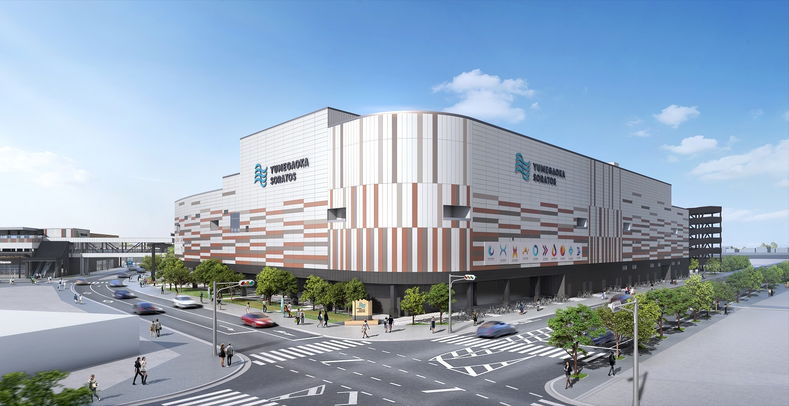

Yumegaoka Soratos
営業時間 10:00～20:00
営業時間 10:00～20:00

ゆめが丘ソラトスは、神奈川県横浜市泉区の再開発エリアに誕生した、駅直結の大型複合商業施設です。2024年7月25日にオープンし、地上3階建・延床面積約 96,800 m²、店舗面積約 42,700 m²。129店舗ものテナントが揃い、横浜市泉区における最大級の商業拠点として、多彩なライフスタイルを支える場所として設計されています。
この施設は、単なるショッピングモールではなく、「食」「ファッション／ライフスタイル」「遊び・エンタメ」「コミュニティ」の4つのキーワードを大切に、“地元らしい暮らし”と“新しい日常の豊かさ”を同時に提案する場所です。
電車でのアクセス — 相鉄いずみ野線のゆめが丘駅に直結。また、横浜市営地下鉄ブルーラインの下飯田駅からは徒歩1分と、複数路線でのアクセスが便利。
駐車場完備 —
車での来訪にも対応しており、駐車場の空き情報は公式サイトで確認可能です。
営業時間 —
ショッピングゾーンの基本営業時間は 10:00〜20:00。食事エリアや一部店舗では営業時間に差がありますので、訪問前にご確認を。
ゆめが丘ソラトスのコンセプトは、「地域とともに育ち、日常に寄り添うローカルライフの創造」です。 館内には、買い物や食事だけでなく“コミュニティが自然と生まれる場所”を目指して整えられた 多様な共用スペースが点在しており、イベント、ワークショップ、子育て支援活動などが日常的に行われます。 さらに、環境負荷を軽減するために太陽光発電設備の導入や、リサイクルを促す仕組みの導入など、 サステナブルな運営方針が重視されている点も特徴です。 こうした取り組みによって、ゆめが丘ソラトスは“ただの商業施設”を超え、住む人や訪れる人に とっての「新しい日常の中心地」として機能する場所を目指しています。 便利さ、楽しさ、そして街とのつながりが自然に融合する──その姿こそがゆめが丘ソラトスの描く未来です。